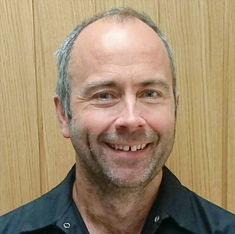
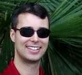
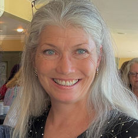
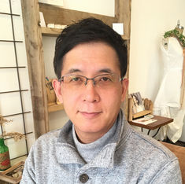
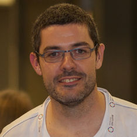
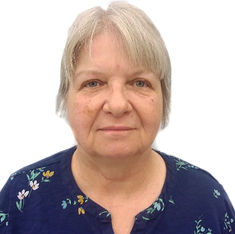
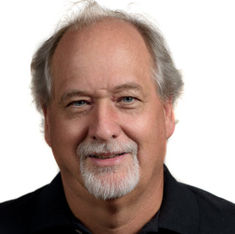
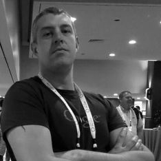
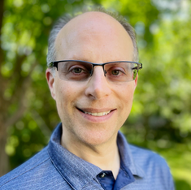

The Sakai Community
Educators who work directly with teaching and learning drive Sakai's open-source development and innovation.
CONTACT US TRY SAKAI NOW DONATESakai Community Leadership
The Sakai community is coordinated by the Apereo Foundation and works together to create a cutting edge learning environment.
The Sakai Project Management Committee (PMC) is the body responsible for strategic oversight of the Sakai project. The committee operates based on meritocratic principles of member selection, and consensus-based decision making in an open and transparent manner.
Sakai PMC Members









Sakai Commercial Affiliates
Commercial affiliates develop, host, and support Sakai.
Longsightis the leading developer of new Sakai functionality, which it contributes to the Sakai community.The company also hosts and supports Sakai in the cloud, which relieves Sakai institutions of managing servers and dedicating resources to support and maintenance.
Learning Experiencesis a business devoted to adding value to the Apereo communities and encouraging the use of Open Source and Open Content in Education.
EDF is a global education technology company whose Sakai experts provide cloud services, development and support to integrate next-generation technologies into classroom practice.